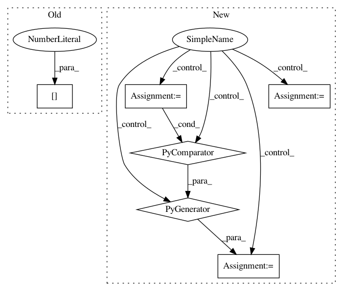

9423dc741a1da8ffbee5d9b7ae6a49d00d3ed151,deepvariant/vcf_stats.py,,_get_variant_type,#Any#,66
Before Change
if variant_utils.is_snp(variant):
return "SNP"
elif variant_utils.is_insertion(variant.reference_bases,
variant.alternate_bases[0]):
return "Insertion"
elif variant_utils.is_deletion(variant.reference_bases,
variant.alternate_bases[0]):
After Change
def _get_variant_type(variant):
Returns the type of variant as a string.
if variant_utils.is_variant_call(variant):
biallelic = variant_utils.is_biallelic(variant)
snp = variant_utils.is_snp(variant)
insertion = all(
variant_utils.is_insertion(variant.reference_bases, alt)
for alt in variant.alternate_bases)
deletion = all(
variant_utils.is_deletion(variant.reference_bases, alt)
for alt in variant.alternate_bases)
In pattern: SUPERPATTERN
Frequency: 3
Non-data size: 6
Instances
Project Name: google/deepvariant
Commit Name: 9423dc741a1da8ffbee5d9b7ae6a49d00d3ed151
Time: 2019-06-13
Author: sidharthgoel@google.com
File Name: deepvariant/vcf_stats.py
Class Name:
Method Name: _get_variant_type
Project Name: OpenNMT/OpenNMT-py
Commit Name: 1802cda9ee0d03354daf790f847345f8dd515555
Time: 2017-06-22
Author: digangi@fbk.eu
File Name: onmt/Models.py
Class Name: NMTModel
Method Name: forward
Project Name: OpenNMT/OpenNMT-py
Commit Name: 90e5b974a7173ab0bba0990a690e32f25f5b725a
Time: 2019-01-14
Author: benzurdopeters@gmail.com
File Name: tools/embeddings_to_torch.py
Class Name:
Method Name: get_vocabs